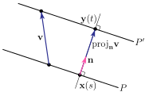

Section 1.5 Equations of Lines in 3d
Just as in two dimensions, a line in three dimensions can be specified by giving one point \((x_0,y_0,z_0)\) on the line and one vector \(\vd=\llt d_x,d_y,d_z\rgt \) whose direction is parallel to that of the line. If \((x,y,z)\) is any point on the line then the vector \(\llt x-x_0,y-y_0,z-z_0\rgt \text{,}\) whose tail is at \((x_0,y_0,z_0)\) and whose arrow is at \((x,y,z)\text{,}\) must be parallel to \(\vd\) and hence a scalar multiple of \(\vd\text{.}\) By translating this statement into a vector equation we get
Equation 1.5.1. Parametric Equations of a Line.
or the three corresponding scalar equations
These are called the parametric equations of the line. Solving all three equations for the parameter \(t\) (assuming that \(d_x\text{,}\) \(d_y\) and \(d_z\) are all nonzero)
and erasing the “\(t=\)” again gives the (so called) symmetric equations for the line.
Here is an example in which we find the parametric equations of a line that is given by the intersection of two planes.
Example 1.5.2.
The set of points \((x,y,z)\) that obey \(x+y+z=2\) form a plane. The set of points \((x,y,z)\) that obey \(x-y=0\) form a second plane. The set of points \((x,y,z)\) that obey both \(x+y+z=2\) and \(x-y=0\) lie on the intersection of these two planes and hence form a line. We shall find the parametric equations for that line.
To sketch \(x+y+z=2\) we observe that if any two of \(x,y,z\) are zero, then the third is \(2\text{.}\) So all of \((0,0,2)\text{,}\) \((0,2,0)\) and \((2,0,0)\) are on \(x+y+z=2\text{.}\) The plane \(x-y=0\) contains all of the \(z\)-axis, since \((0,0,z)\) obeys \(x-y=0\) for all \(z\text{.}\) Here are separate sketches of (parts of) the two planes.
And here is a sketch of their intersection
Method 1. Each point on the line has a different value of \(z\text{.}\) We'll use \(z\) as the parameter. (We could just as well use \(x\) or \(y\text{.}\)) There is no law that requires us to use the parameter name \(t\text{,}\) but that's what we have done so far, so set \(t=z\text{.}\) If \((x,y,z)\) is on the line then \(z=t\) and
The second equation forces \(y=x\text{.}\) Substituting this into the first equation gives
So the parametric equations are
Method 2. We first find one point on the line. There are lots of them. We'll find the point with \(z=0\text{.}\) (We could just as well use z=123.4, but arguably \(z=0\) is a little easier.) If \((x,y,z)\) is on the line and \(z=0\text{,}\) then
The second equation again forces \(y=x\text{.}\) Substituting this into the first equation gives
So \((1,1,0)\) is on the line. Now we'll find a direction vector, \(\vd\text{,}\) for the line.
- Since the line is contained in the plane \(x+y+z=2\text{,}\) any vector lying on the line, like \(\vd\text{,}\) is also completely contained in that plane. So \(\vd\) must be perpendicular to the normal vector of \(x+y+z=2\text{,}\) which is \(\llt 1,1,1\rgt \text{.}\)
- Similarly, since the line is contained in the plane \(x-y=0\text{,}\) any vector lying on the line, like \(\vd\text{,}\) is also completely contained in that plane. So \(\vd\) must be perpendicular to the normal vector of \(x-y=0\text{,}\) which is \(\llt 1,-1,0\rgt \text{.}\)
So we may choose for \(\vd\) any vector which is perpendicular to both \(\llt 1,1,1\rgt \) and \(\llt 1,-1,0\rgt\text{,}\) like, for example,
We now have both a point on the line (namely \((1,1,0)\)) and a direction vector for the line (namely \(\llt -1,-1,2\rgt\)), so, as usual, the parametric equations for the line are
This looks a little different than the solution from method 1, but we'll see in a moment that they are really the same. Before that, let's do one more method.
Method 3. We'll find two points on the line. We have already found that \((1,1,0)\) is on the line. From the picture above, it looks like \((0,0,2)\) is also on the line. This is indeed the case since \((0,0,2)\) obeys both \(x+y+z=2\) and \(x-y=0\text{.}\) Notice that we could also have guessed \((0,0,2)\) by setting \(x=0\) and then solving \(y+z=x+y+z=2\text{,}\) \(-y=x-y=0\) for \(x\) and \(y\text{.}\) As both \((1,1,0)\) and \((0,0,2)\) are on the line, the vector with head at \((1,1,0)\) and tail at \((0,0,2)\text{,}\) which is \(\llt 1-0,1-0,0-2\rgt =\llt 1,1,-2\rgt \text{,}\) is a direction vector for the line. As \((0,0,2)\) is a point on the line and \(\llt 1,1,-2\rgt \) is a direction vector for the line, the parametric equations for the line are
This also looks similar, but not quite identical, to our previous answers. Time for a comparison.
Comparing the answers. The parametric equations given by the three methods are different. That's just because we have really used different parameters in the three methods, even though we have called the parameter \(t\) in each case. To clarify the relation between the three answers, rename the parameter of method 1 to \(t_1\text{,}\) the parameter of method 2 to \(t_2\) and the parameter of method 3 to \(t_3\text{.}\) The parametric equations then become
Substituting \(t_1=2t_2\) into the Method 1 equations gives the Method 2 equations, and substituting \(t_3=1-t_2\) into the Method 3 equations gives the Method 2 equations. So all three really give the same line, just parametrized a little differently.
Warning 1.5.3. A line in three dimensions has infinitely many normal vectors.
For example, the line
has direction vector \(\llt 1,2,-2\rgt\text{.}\) Any vector perpendicular to \(\llt 1,2,-2\rgt \) is perpendicular to the line. The vector \(\llt n_1,n_2,n_3\rgt\) is perpendicular to \(\llt 1,2,-2\rgt\) if and only if
There is whole plane of \(\llt n_1,n_2,n_3\rgt\)'s obeying this condition, of which \(\llt 2,-1,0\rgt\text{,}\) \(\llt 0,1,1\rgt\) and \(\llt 2,0,1\rgt\) are only three examples.
The next two examples illustrate two different methods for finding the distance between a point and a line.
Example 1.5.4.
In this example, we find the distance between the point \((2,3,-1)\) and the line
The vector from \((2,3,-1)\) to the point \((1+t\,,\,2+t\,,\,3+2t)\) on \(L\) is \(\llt t-1\,,\,t-1\,,\,2t+4\rgt\text{.}\) The square of the distance between \((2,3,-1)\) and the point \((1+t\,,\,2+t\,,\,3+2t)\) on \(L\) is the square of the length of that vector, namely
The point on \(L\) that is closest to \((2,3,-1)\) is that whose value of \(t\) obeys
Before we solve this equation for \(t\) and finish of our computation, observe that this equation (divided by \(2\)) says that
That is, the vector from \((2,3,-1)\) to the point on \(L\) nearest \((2,3,-1)\) is perpendicular to \(L\)'s direction vector.
Now back to our computation. The equation \((*)\) simplifies to \(12t+12=0\text{.}\) So the optimal \(t=-1\) and the distance is
Example 1.5.5. Example 1.5.4 revisited.
In this example, we again find the distance between the point \((2,3,-1)\) and the line
but we use a different method. In the figure below, \(Q\) is the point \((2,3,-1)\text{.}\)
If we drop a perpendicular from \(Q\) to the line \(L\text{,}\) it hits the line \(L\) at the point \(N\text{,}\) which is the point on \(L\) that is nearest \(Q\text{.}\) So the distance from \(Q\) to \(L\) is exactly the distance from \(Q\) to \(N\text{,}\) which is exactly the length of the vector from \(Q\) to \(N\text{.}\) In the figure above, \(\vw\) is the vector from \(Q\) to \(N\text{.}\) Now the vector \(\vw\) has to be perpendicular to the direction vector for \(L\text{.}\) That is, \(\vw\) has to be perpendicular to \(\vd=\llt 1,1,2\rgt\text{.}\) However, as we saw in Warning 1.5.3, there are a huge number of vectors in different directions that are perpendicular to \(\vd\text{.}\) So you might think that it is very hard to even determine the direction of \(\vw\text{.}\)
Fortunately, it isn't. Here is the strategy.
- Pick any point on \(L\) and call it \(P\text{.}\)
- It is very easy to find the vector from \(P\) to \(N\) — it is just the projection of the vector from \(P\) to \(Q\) (called \(\vv\) in the figure above) on \(\vd\text{.}\)
- Once we know \({\rm proj}_{\vd}\,\vv\text{,}\) we will be able to compute\begin{equation*} \vw = {\rm proj}_{\vd}\,\vv -\vv \end{equation*}
- and then the distance from \(Q\) to the line \(L\) is just \(|\vw|\text{.}\)
Here is the computation. We'll choose \(P\) to be the point on \(L\) that has \(t=0\text{,}\) which is \((1,2,3)\text{.}\) So the vector from \(P=(1,2,3)\) to \(Q=(2,3,-1)\) is
The projection of \(\vv=\llt 1,1,-4\rgt\) on \(\vd=\llt 1,1,2\rgt\) is
and then
and finally the distance from \(Q\) to the line \(L\) is
The next two (optional) examples illustrate two different methods for finding the distance between two lines.
Example 1.5.6. (Optional) Distance between lines.
In this example, we find the distance between the lines
We can rewrite the equations of the lines as
Of course the value of \(t\) in the parametric equation for \(L\) need not be the same as the value of \(t\) in the parametric equation for \(L'\text{.}\) So let us denote by \(\vx(s) = (1+s\,,\,2\,,\,3-s)\) and \(\vy(t) = (1+t\,,\,2-2t\,,\,1+t)\) the points on \(L\) and \(L'\text{,}\) respectively, that are closest together. Note that the vector from \(\vx(s)\) to \(\vy(t)\) is \(\llt t-s\,,\,-2t\,,\,-2+s+t \rgt\text{.}\) Then, in particular,
- \(\vx(s)\) is the point on \(L\) that is closest to the point \(\vy(t)\text{,}\) and
- \(\vy(t)\) is the point on \(L'\) that is closest to the point \(\vx(s)\text{.}\)
So, as we saw in Example 1.5.4, the vector, \(\llt t-s\,,\,-2t\,,\,-2+s+t \rgt\text{,}\) that joins \(\vx(s)\) and \(\vy(t)\text{,}\) must be perpendicular to both the direction vector of \(L\) and the direction vector of \(L'\text{.}\) Consequently
So \(s=1\) and \(t=\frac{1}{3}\) and the distance between \(L\) and \(L'\) is
Example 1.5.7. Example 1.5.6 revisited, again optional.
In this example, we again find the distance between the lines
this time using a projection, much as in Example 1.4.5. The procedure, which will be justified below, is
- first form a vector \(\vn\) that is perpendicular to the direction vectors of both lines by taking the cross product of the two direction vectors. In this example,\begin{align*} \llt 1,0,-1\rgt \times\llt 1,-2,1\rgt & = \det\left[\begin{matrix} \hi&\hj&\hk \\ 1 & 0 & -1 \\ 1 &-2 & 1\end{matrix}\right] = -2\hi -2 \hj -2\hk \end{align*}Since we just want \(\hn\) to be perpendicular to both direction vectors, we may simplify our computations by dividing this vector by \(-2\text{,}\) and take \(\vn = \llt 1,1,1 \rgt\text{.}\)
- Next find one point on \(L\) and one point on \(L'\) and subtract to form a vector \(\vv\) whose tail is at one point and whose head is at the other point. This vector goes from one line to the other line. In this example, the point \((1,2,3)\) is on \(L\) (just set \(t=0\) in the equation for \(L\)) and the point \((1,2,1)\) is on \(L'\) (just set \(t=0\) in the equation for \(L'\)), so that we may take\begin{equation*} \vv = \llt 1-1\,,\,2-2\,,\,3-1\rgt = \llt 0,0,2 \rgt \end{equation*}
- The distance between the two lines is the length of the projection of \(\vv\) on \(\vn\text{.}\) In this example, by 1.2.14, the distance is\begin{align*} \big|{\rm proj}_{\vn}\,\vv\big| &=\left|\frac{\vv\cdot\vn}{|\vn|^2}\,\vn\right| =\frac{|\vv\cdot\vn|}{|\vn|}\\ &= \frac{|\llt 0,0,2\rgt\cdot\llt 1,1,1\rgt|}{|\llt 1,1,1\rgt|}\\ &= \frac{2}{\sqrt{3}} \end{align*}just as we found in Example 1.5.6
Now, here is the justification for the procedure.
- As we did in Example 1.5.6, denote by \(\vx(s)\) and \(\vy(t)\) the points on \(L\) and \(L'\text{,}\) respectively, that are closest together. Note that, as we observed in Example 1.5.6, the vector from \(\vx(s)\) to \(\vy(t)\) is perpendicular to the direction vectors of both lines, and so is parallel to \(\vn\text{.}\)
- Denote by \(P\) the plane through \(\vx(s)\) that is perpendicular to \(\vn\text{.}\) As \(\vx(s)\) is on \(L\) and the direction vector of \(L\) is perpendicular to \(\vn\text{,}\) the line \(L\) is contained in \(P\text{.}\)
- Denote by \(P'\) the plane through \(\vy(t)\) that is perpendicular to \(\vn\text{.}\) As \(\vy(t)\) is on \(L'\) and the direction vector of \(L'\) is perpendicular to \(\vn\text{,}\) the line \(L'\) is contained in \(P'\text{.}\)
- The planes \(P\) and \(P'\) are parallel to each other. As \(\vx(s)\) is on \(P\) and \(\vy(t)\) is on \(P'\text{,}\) and the vector from \(\vx(s)\) to \(\vy(t)\) is perpendicular to both \(P\) and \(P'\text{,}\) the distance from \(P\) to \(P'\) is exactly the length of the vector from \(\vx(s)\) to \(\vy(t)\text{.}\) That is also the distance from \(L\) to \(L'\text{.}\)
-
The vector \(\vv\) constructed in the procedure above is a vector between \(L\) and \(L'\) and so is also a vector between \(P\) and \(P'\text{.}\) Looking at the figure below 1 , we see that the vector from \(\vx(s)\) to \(\vy(t)\) is (up to a sign) the projection of \(\vv\) on \(\vn\text{.}\)
 - So the distance from \(P\) to \(P'\text{,}\) and hence the distance from \(L\) to \(L'\text{,}\) is exactly the length of \({\rm proj}_{\vn}\vv\text{.}\)
Exercises 1.5.1 Exercises
Exercises — Stage 1
1.
What is wrong with the following exercise?
“Give an equation for the line passing through the point \((3,1,3)\) that is normal to the vectors \(\llt 4,-6,2 \rgt\) and \(\llt \frac13,-\frac12,\frac16 \rgt\text{.}\)”
2.
Find, if possible, four lines in 3d with
- no two of the lines parallel to each other and
- no two of the lines intersecting.
Exercises — Stage 2
3.
Find a vector parametric equation for the line of intersection of the given planes.
- \(x-2z=3\) and \(y+\half z=5\)
- \(2x-y-2z=-3\) and \(4x-3y-3 z=-5\)
4.
Determine a vector equation for the line of intersection of the planes
- \(x+y+z=3\) and \(x+2y+3z=7\)
- \(x+y+z=3\) and \(2x+2y+2z=7\)
5.
In each case, determine whether or not the given pair of lines intersect. Also find all planes containing the pair of lines.
- \(\llt x,y,z\rgt = \llt -3,2,4\rgt+t\llt -4,2,1\rgt\) and \(\llt x,y,z\rgt = \llt 2,1,2\rgt+t\llt 1,1,-1\rgt\)
- \(\llt x,y,z\rgt = \llt -3,2,4\rgt+t\llt -4,2,1\rgt\) and \(\llt x,y,z\rgt = \llt 2,1,-1\rgt+t\llt 1,1,-1\rgt\)
- \(\llt x,y,z\rgt = \llt -3,2,4\rgt+t\llt -2,-2,2\rgt\) and \(\llt x,y,z\rgt = \llt 2,1,-1\rgt+t\llt 1,1,-1\rgt\)
- \(\llt x,y,z\rgt = \llt 3,2,-2\rgt+t\llt -2,-2,2\rgt\) and \(\llt x,y,z\rgt = \llt 2,1,-1\rgt+t\llt 1,1,-1\rgt\)
6.
Find the equation of the line through \((2,-1,-1)\) and parallel to each of the two planes \(x+y=0\) and \(x-y+2z=0\text{.}\) Express the equations of the line in vector and scalar parametric forms and in symmetric form.
7. ✳.
Let \(L\) be the line given by the equations \(x + y = 1\) and \(x + 2y + z = 3\text{.}\) Write a vector parametric equation for \(L\text{.}\)
8.
- Find a vector parametric equation for the line \(x+2y+3z=11,\ x-2y+z=-1\text{.}\)
- Find the distance from \((1,0,1)\) to the line \(x+2y+3z=11,\ x-2y+z=-1\text{.}\)
9.
Let \(L_1\) be the line passing through \((1,-2,-5)\) in the direction of \(\vd_1=\llt 2,3,2\rgt\text{.}\) Let \(L_2\) be the line passing through \((-3,4,-1)\) in the direction \(\vd_2=\llt 5,2,4\rgt\text{.}\)
- Find the equation of the plane \(P\) that contains \(L_1\) and is parallel to \(L_2\text{.}\)
- Find the distance from \(L_2\) to \(P\text{.}\)
10. ✳.
Let \(L\) be a line which is parallel to the plane \(2x + y - z = 5\) and perpendicular to the line \(x = 3 - t\text{,}\) \(y = 1 - 2t\) and \(z = 3t\text{.}\)
- Find a vector parallel to the line \(L\text{.}\)
- Find parametric equations for the line \(L\) if \(L\) passes through a point \(Q(a, b, c)\) where \(a \lt 0\text{,}\) \(b \gt 0\text{,}\) \(c \gt 0\text{,}\) and the distances from \(Q\) to the \(xy\)--plane, the \(xz\)--plane and the \(yz\)--plane are \(2\text{,}\) \(3\) and \(4\) respectively.
11. ✳.
Let \(L\) be the line of intersection of the planes \(x + y + z = 6\) and \(x - y + 2z = 0\text{.}\)
- Find the points in which the line \(L\) intersects the coordinate planes.
- Find parametric equations for the line through the point \((10, 11, 13)\) that is perpendicular to the line \(L\) and parallel to the plane \(y = z\text{.}\)
12. ✳.
The line \(L\) has vector parametric equation \(\vr(t) = (2 + 3t)\hi + 4t\hj - \hk\text{.}\)
- Write the symmetric equations for \(L\text{.}\)
- Let \(\alpha\) be the angle between the line \(L\) and the plane given by the equation \(x - y + 2z = 0\text{.}\) Find \(\alpha\text{.}\)
13. ✳.
Find the parametric equation for the line of intersection of the planes
14. ✳.
- Find a point on the y-axis equidistant from \((2, 5, -3)\) and \((-3, 6, 1)\text{.}\)
- Find the equation of the plane containing the point \((1, 3, 1)\) and the line \(\vr(t) = t\,\hi + t\,\hj + (t + 2)\,\hk\text{.}\)
Exercises — Stage 3
15. ✳.
Let \(A=(0,2,2)\text{,}\) \(B=(2,2,2)\text{,}\) \(C=(5,2,1)\text{.}\)
- Find the parametric equations for the line which contains \(A\) and is perpendicular to the triangle \(ABC\text{.}\)
- Find the equation of the set of all points \(P\) such that \(\overrightarrow{PA}\) is perpendicular to \(\overrightarrow{PB}\text{.}\) This set forms a Plane/Line/Sphere/Cone/Paraboloid/Hyperboloid (circle one) in space.
-
A light source at the origin shines on the triangle \(ABC\) making a shadow on the plane \(x+7y+z=32\text{.}\) (See the diagram.) Find \(\tilde A\text{.}\)
16.
Let \(P,\ Q,\ R\) and \(S\) be the vertices of a tetrahedron. Denote by \(\vp,\ \vq,\ \vr\) and \(\vs\) the vectors from the origin to \(P,\ Q,\ R\) and \(S\) respectively. A line is drawn from each vertex to the centroid of the opposite face, where the centroid of a triangle with vertices \(\va,\ \vb\) and \(\vc\) is \(\frac{1}{3}(\va+\vb+\vc)\text{.}\) Show that these four lines meet at \(\frac{1}{4}(\vp+\vq+\vr+\vs\)).
17.
Calculate the distance between the lines \(\frac{x+2}{3}=\frac{y-7}{-4}=\frac{z-2}{4}\) and \(\frac{x-1}{-3}=\frac{y+2}{4}=\frac{z+1}{1}\text{.}\)